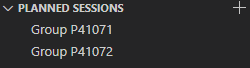
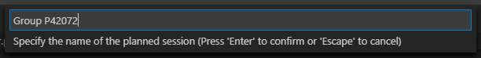
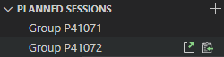
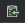
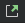
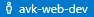
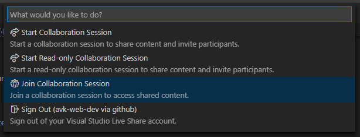
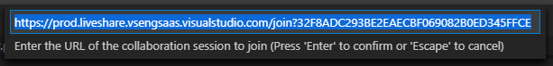

Совместная работа в Visual Studio Code
Подготовка к работе
Регистрация аккаунта на GitHub
Перед началом совместной работы необходимо зарегистрировать аккаунт на GitHub, так как в дальнейшем он будет необходим для осуществления авторизации в сервисе совместной разработки Visual Studio Live Share, который выступает в качестве связующего облака между всеми участниками сессии разработки.
Установка Visual Studio Code
Поскольку совместная работа над проектами будет осуществлятся в редакторе Visual Studio Code, то его необходимо скачать по одной из нижеприведенных ссылок, а затем установить.
Скачать для Windows Скачать для MacOS Скачать для Linux
Либо самостоятельно выбрать необходимую версию на официальном сайте.
Действия организатора
Выбор рабочего проекта
Перед тем как запустить сессию вещания, необходимо сначала открыть в редакторе папку нужного рабочего проекта. При чем это касается также функционала запланированных сессии, которые будут рассмотрены в следующем подразделе.
Стоит также отметить, что если Вы в данный момент ведете вещание рабочей сессии, то открытие другого проекта приведет к созданию нового окна редактора.
Кроме того, при закрытии окна с активной сессией вещания - она будет прервана.
Планирование сессии
Для того, чтобы создать постоянную ссылку на сессию можно воспользоваться функционалом вкладки «Planned Sessions», которая доступна пользователю, когда он не находиться в какой-либо сессии. Она представлена на следующем рисунке.

Сперва необходимо нажать на кнопку плюса , после чего появиться поле, в котором необходимо ввести название для запланированной сессии, как показано на следующем рисунке.

После выполнения данных действий соответствующая сессия появиться в списке запланированных. Далее необходимо навести курсор на запланированную сессию и можно будет увидеть две иконки представленые на следующим рисунке.

Если нажать на иконку планшета , то можно скопировать ссылку на выбранную сессию. Полученную ссылку необходимо разослать участникам сессии.
Для того, чтобы начать вещание запланированной сессии, необходимо кликнуть по иконке открытия внешней ссылки .
Действия участника
Для начала, перед тем как выполнять действия из данного раздела, необходимо проделать действия из раздела 1, а также изучить интерфейс плагина LiveShare в разделе 2
Чтобы присоединится к какой-либо сессии Вам необходимо получить у организатора ссылку примерно следующего вида:
Далее необходимо нажать на кнопку управления Live Share аккаунтом  и дождаться открытия меню управления аккаунтом. В данном меню Вам необходимо выбрать пункт «Join Collaboration Session», как показано на следующем риснуке.

Затем появиться поле ввода, куда необходимо будет вставить ранее полученную ссылку, как показано на следующем рисунке.

Если все действия были выполнены правильно и сессия не была прервана организатором, то Вы должны будете присоединиться к ней и принимать участие в совместной разработке!